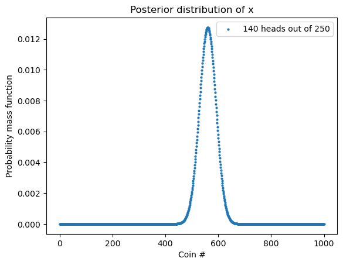
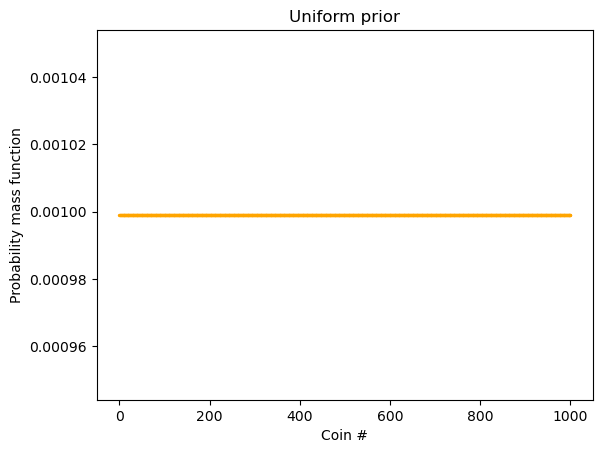
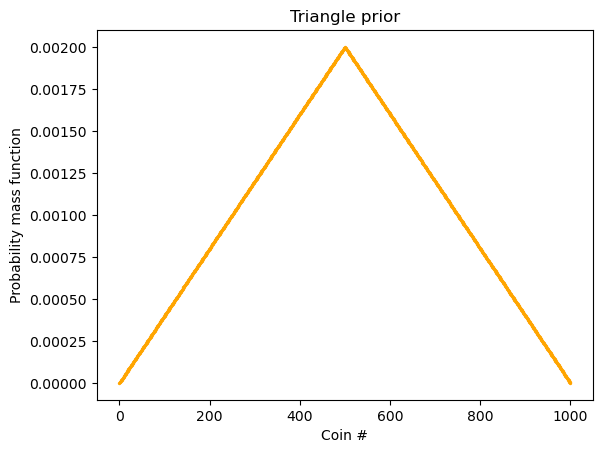
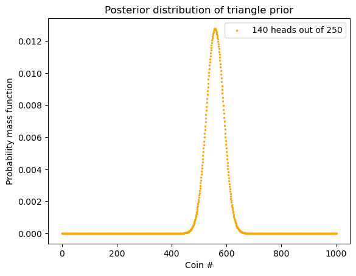
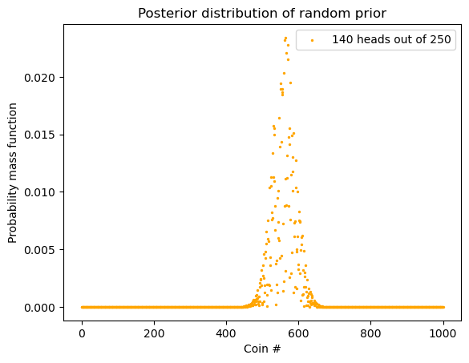

import numpy as np
import matplotlib.pyplot as plt
import pandas as pd
from scipy.stats import binom 4 Prior Distributions 之选择
一枚硬币，随机抛掷 250 次，观测的结果是 140 次正面朝上，110 次背面朝上。将这枚硬币随机抛掷一次，是正面朝上的概率最有可能是多少？

上图来自搜狐
我们可以用 Chapter 3 那部分的例子来思考。
可以把这个问题转化为：
我们目前有 \(n+1\) 枚硬币，其各有如下特征：
- 随机抛硬币 0，正面朝上的概率是 0/n
- 随机抛硬币 1，正面朝上的概率是 1/n
- 随机抛硬币 2，正面朝上的概率是 2/n
… - 随机抛硬币 n，正面朝上的概率是 n/n
我们从这些硬币中随机挑了一枚，随机抛掷 250 次，观测的结果是 140 次正面朝上，110 次背面朝上。这枚硬币最有可能是哪枚硬币？
我们先用 uniform prior，也就是说，每一枚硬币是该硬币的概率相同。
def normalize_array(arr):
return np.array([i/sum(arr) for i in arr])
# 稍微修改一下之前的 update_bowls_pmf
def update_coins_pmf(n, h, t):
"""
n: 总共几枚硬币
h: 正面朝上
t: 背面朝上
"""
prior = np.array([1]*n)
prior = normalize_array(prior)
likelihood_head = np.array([i/(n-1) for i in range(n)])
likelihood_tail = np.array([1- i for i in likelihood_head])
likelihood = {
"head": likelihood_head,
"tail": likelihood_tail
}
dataset = ["head"]*h + ["tail"]*t
posterior = prior.copy()
for data in dataset:
posterior *= likelihood[data]
return normalize_array(posterior)posterior = update_coins_pmf(1001, 140, 110)Code
df = pd.DataFrame(posterior, columns=['probs'])
df = df.reset_index(names = "Coin #")
df.plot.scatter(x = "Coin #", y="probs",
s = 4,
label = "140 heads out of 250")
plt.ylabel("Probability mass function")
plt.legend()
plt.title("Posterior distribution of x")
plt.show()
4.1 不同的 Prior Distributions
上面我们用到的是 uniform prior：
Code
n = 1001
prior = np.array([1]*n)
uniform = normalize_array(prior)
x_axis = range(n)
plt.scatter(x = x_axis, y = uniform,
label="prior", color="orange", s = 2)
plt.xlabel("Coin #")
plt.ylabel("Probability mass function")
plt.title("Uniform prior")
plt.show()
但是该 prior 并不一定是 uniform 的，也可能是这样子：
Code
ramp_up = np.arange(500)
ramp_down = np.arange(500, -1, -1)
prior = np.append(ramp_up, ramp_down)
triangle = normalize_array(prior)
plt.scatter(x = x_axis, y = triangle,
label="prior", color="orange", s = 2)
plt.xlabel("Coin #")
plt.ylabel("Probability mass function")
plt.title("Triangle prior")
plt.show()
如果我们用如此的 prior，结果是什么呢：
# 稍微修改一下之前的 update_coins_pmf 以便可以修改 prior
def update_coins_pmf(n, h, t, prior):
"""
n: 总共几枚硬币
h: 正面朝上
t: 背面朝上
prior: a normalized array
"""
likelihood_head = np.array([i/(n-1) for i in range(n)])
likelihood_tail = np.array([1- i for i in likelihood_head])
likelihood = {
"head": likelihood_head,
"tail": likelihood_tail
}
dataset = ["head"]*h + ["tail"]*t
posterior = prior.copy()
for data in dataset:
posterior *= likelihood[data]
return normalize_array(posterior)n = 1001
h = 140
t = 110
ramp_up = np.arange(500)
ramp_down = np.arange(500, -1, -1)
prior = np.append(ramp_up, ramp_down)
prior = normalize_array(prior)
posterior = update_coins_pmf(n, h, t, prior)Code
plt.scatter(x = x_axis, y = posterior,
label="140 heads out of 250", color="orange", s = 2)
plt.xlabel("Coin #")
plt.ylabel("Probability mass function")
plt.title("Posterior distribution of triangle prior")
plt.legend()
plt.show()
max_index = np.argmax(posterior)
print("最高点出现在 Coin #", max_index)最高点出现在 Coin # 558我们看到和用 uniform prior 结果差不多。这说明什么？这说明数据够多的话，prior 对 posterior 的影响没那么大。
但我们来个更极端的：随机 prior。
random_prior_values = np.random.rand(n)
random_prior = normalize_array(random_prior_values)
posterior = update_coins_pmf(n, h, t, prior=random_prior)Code
plt.scatter(x = x_axis, y = posterior,
label="140 heads out of 250", color="orange", s = 2)
plt.xlabel("Coin #")
plt.ylabel("Probability mass function")
plt.title("Posterior distribution of random prior")
plt.legend()
plt.show()
max_index = np.argmax(posterior)
print("最高点出现在 Coin #", max_index)最高点出现在 Coin # 565我们看到，其实结果依然没有太大的影响。这进一步说明「这说明数据够多的话，prior 对 posterior 的影响没那么大」。
4.2 Batch updating
上面我们是一个数据点一个数据点地在更新 posterior：
for data in dataset:
posterior *= likelihood[data]我们之前证明过了，顺序不重要，那我们就把「随机抛掷 250 次，观测的结果是 140 次正面朝上，110 次背面朝上」当成一个单独的事件就好了。这个事件也就是 Data。
我们来分析：
- hypothesis: 哪枚硬币
- data: 随机抛掷 250 次，观测的结果是 140 次正面朝上，110 次背面朝上
- prior: \(p(h)\)
- likelihood: \(p(d|h)\)
- posterior: \(p(h|d)\)
我们现在要用 prior 和 likelihood 求得 posterior。Prior 我们有了，不管是最开始的 uniform prior 还是 triangle prior，其本质就是一个数组 (array) 而已。那我们如何得到 Likelihood 这一数组？需要用到 binomial distribution：
\[P(X = k) = \binom{n}{k} p^k (1-p)^{n-k}\]
我们用 scipy.stats.binom。
scipy.stats.binom.pmf(k, n, p)其中 k 是正面朝上的次数，n 是总攻抛掷的次数， p 是正面朝上的概率。需要注意的是，p 可以是一个数，也可以是一组数。当 p 是一个数时，其结果是一个数。当 p 是一组数时，结果是一组数。
其实，这里的 \(p\) 就是 prior 这一数组
def update_binom(n, heads, tosses, prior):
"""
heads: number of heads
tosses: total tosses
prior: prior distribution; should be a empiricaldist.pmf object (a Series)
"""
# 0/n, 1/n, 2/n ...
likelihood_head = np.array([i/(n-1) for i in range(n)])
coin_head_probabilities = likelihood_head
likelihood = binom.pmf(k = heads, n = tosses, p = coin_head_probabilities)
posterior = prior.copy()
posterior *= likelihood
return normalize_array(posterior)# n: number of coins
n = 1001
tosses = 250
# number of heads out of 250 tosses
heads = 140
prior = np.array([1]*n)
uniform = normalize_array(prior)
posterior = update_binom(n, heads, tosses, uniform)Code
plt.scatter(x = x_axis, y = posterior,
label="140 heads out of 250", color="orange", s = 2)
plt.xlabel("Coin #")
plt.ylabel("Probability mass function")
plt.title("Posterior distribution of a uniform prior")
plt.legend()
plt.show()